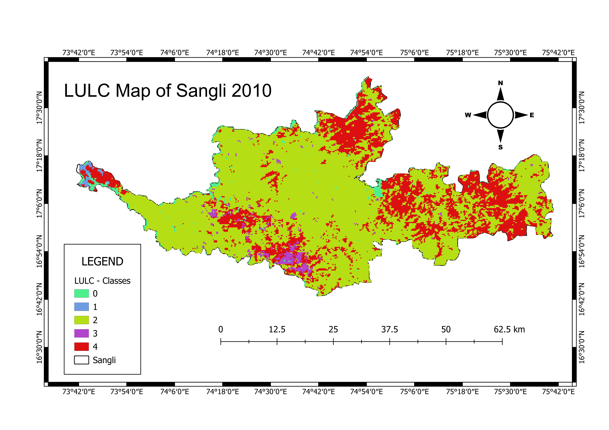
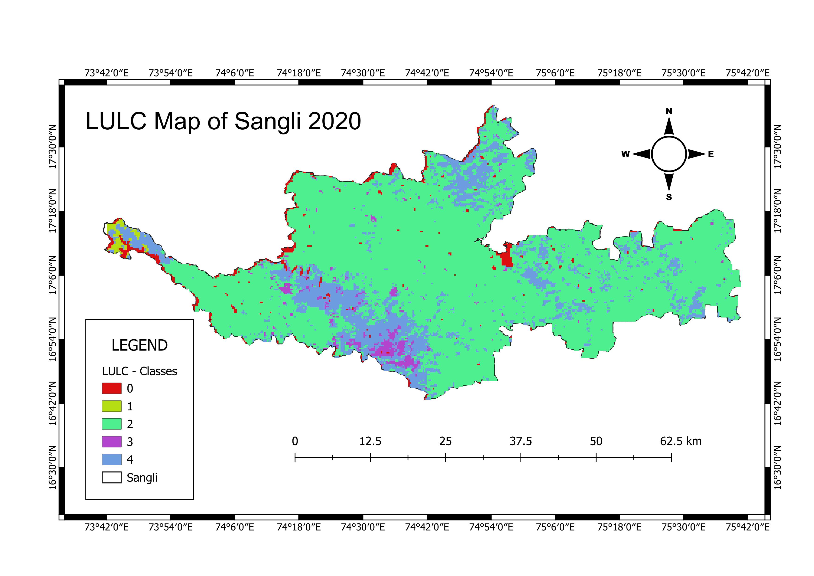
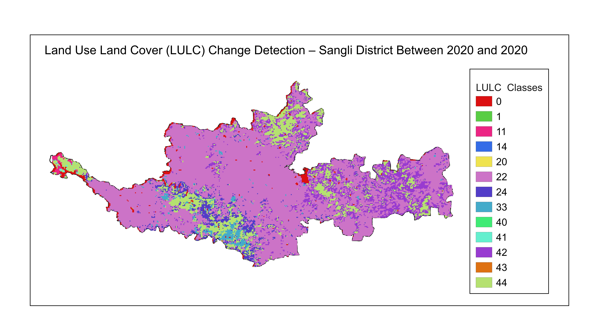

🌿
Land Use Land Cover
(LULC) Mapping
Multi-temporal Land Use and Land Cover mapping
using Google Earth Engine (GEE) and MODIS imagery
based on the IGBP classification system.
Introduction
Land Use Land Cover (LULC) mapping is an essential
geospatial application for monitoring environmental
changes, natural resources, urban expansion and
agricultural development.
This project utilizes Google Earth Engine (GEE) and
MODIS Land Cover Type data to generate LULC maps for
2010 and 2020 based on the International Geosphere–
Biosphere Programme (IGBP) classification system.
A change detection analysis was performed to identify
major land cover transitions over the study period.
Study Area
Study Area :
SANGLI DISTRICT, MAHARASHTRA, INDIA
Study Period :
2010 & 2020
Objectives
- Generate LULC maps for 2010 and 2020.
- Classify land cover using the MODIS IGBP classification system.
- Analyze spatial distribution of land cover classes.
- Perform change detection between 2010 and 2020.
Software & Datasets Used
Google Earth Engine
QGIS
MODIS MCD12Q1
Methodology Flowchart
Study Area
↓
MODIS MCD12Q1 Collection
↓
Google Earth Engine
↓
IGBP Classification
↓
LULC Map (2010)
↓
LULC Map (2020)
↓
Change Detection
↓
Final Maps & Statistics
Maps Gallery

LULC Map (2010)

LULC Map (2020)

Change Detection (2010–2020)
Results
- Generated LULC maps for 2010 and 2020 using MODIS MCD12Q1 data.
- Performed change detection to quantify land cover transitions between 2010 and 2020.
- Observed changes in vegetation, cropland, built-up areas and water bodies over the study period.
- Produced thematic maps useful for environmental monitoring and land management.